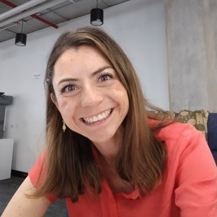

About Me
I define myself as a person with great organizational skills, very peculiar creativity (not to say uncommon), and determined, I like to focus on what is important, and what is essential, and I try to stay away from everything that is not useful to me, which is reflected in all my actions.
My rational thought is evident in my preference for geometry, for the simple, discarding the complex. And here is one of my favorite phrases said by a German architect, long before hearing it I was already immersed in this style
"Less is more."Mies van der Rohe[1]
My Hobbies are:
- Cooking
- Photography
- Yoga
- Arts & Crafts
- Hiking
- Listen to music